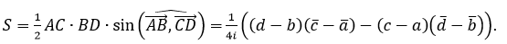

комплексные числа в геометрии
Каждому комплексному числу z = a + bi поставим в соответствие точку M(a, b) плоскости (с прямоугольной системой координат) с абсциссой a и ординатой b. Точка M(a, b) называется точкой, изображающей число a + bi.
Для любых двух комплексных чисел a + bi и c + di равенство a + bi = c + di имеет место тогда и только тогда, когда a = c и b = d. Поэтому отображение, ставящее в соответствие каждому комплексному числу a + bi точку M(a, b) координатной плоскости, является инъективным отображением множества C комплексных чисел на множество всех точек координатной плоскости. Координатная плоскость, точки которой изображают комплексные числа, называется комплексной плоскостью.
Пусть r и φ ‑ полярные координаты точки M (точка O ‑ начало,
Ox ‑ полярная ось).
Тогда r = (a 2 + b 2)½, т.е.
r ‑ модуль комплексного числа a + bi.
Действительные числа изображаются точками оси абсцисс, поэтому ось абсцисс называется действительной осью. Точки оси ординат изображают чисто мнимые числа, т.е. числа вида bi, где b ∈ R, поэтому ось ординат называется мнимой осью.
Сопряженные комплексные числа z и z изображаются точками, симметричными относительно действительной оси. Взаимно противоположные числа z и -z изображаются точками, симметричными относительно начала координат.
Точки, изображающие комплексные числа с одним и тем же модулем r, r > 0, расположены на окружности радиуса r с центром в начале координат.
Изобразим на комплексной плоскости комплексные числа z1 =
a1 + b1i, z2 = a2 + b2i
и их сумму
z3 = (a1 + a2) + (b1 + b2)i
соответственно точками M1, M2 и M3.
Геометрически направленный отрезок OM3 получается из
направленных отрезков OM1 и OM2 по «правилу параллелограмма».
ПРИМЕНЕНИЕ КОМПЛЕКСНЫХ ЧИСЕЛ В ЭЛЕМЕНТАРНОЙ ГЕОМЕТРИИ
1. Изображение комплексных чисел точками на плоскости
Рассмотрим плоскость с введенной на ней прямоугольной декартовой системой координат. Поставим в соответствие каждому комплексному числу z=x+yi (x и y - действительные числа) в соответствие точку Z(x;y) координатной плоскости. Заметим, что установленное соответствие между множеством комплексных чисел и множеством точек координатной плоскости взаимно однозначно. Заметим также, что каждой точке Z(x;y) координатной плоскости поставлен в соответствие радиус-вектор z (см. рис.), координаты которого совпадают с координатами точки Z.
Определение. Плоскость, на которой изображаются в виде точек комплексные числа, называется комплексной плоскостью.
Любому действительному числу соответствует точка Z(x;0), а любому чисто мнимому числу соответствует точка Z(0;y). Поэтому все действительные числа изображаются точками оси абсцисс, которая называется действительной осью, а все чисто мнимые числа изображаются точками оси ординат, которая называется мнимой осью.
2. Векторная интерпретация операций с комплексными числами
Проиллюстрируем операции сложения и вычитания комплексных чисел на комплексной плоскости.
Пусть даны комплексные числа z1=x1+y1i и z2= x2+y2 i . Как известно, их сумма равна комплексному числу z= z1+z2=(x1+x2 )+(y1+y2)i. Рассмотрим соответствующие числам z1, z2 и z радиус-векторы z 1 (x1; y1), z 2 (x2; y2), и z ( x1+x2 ; y1+y2 ). Тогда z = z 1 + z 2. Пусть векторы z 1 и z 2 неколлинеарны. Так как они имеют общее начало – начало координат точку O, то их сумму – вектор z = OZ - можно построить по правилу параллелограмма (см. рис.). Конец этого вектора – точка Z( x1+x2 ; y1+y2) - изображение комплексного числа z = z1 + z2 = (x1 + x2) + (y1 + y2) i.
Рассмотрим разность комплексных чисел z= x1+y1 i и z= x2+y2 i. Она равна комплексному числу z=z1-z2=(x1- x2 )+(y1-y2)i. Рассмотрим соответствующие числам z1, z2 и z радиус - векторы z 1(x1; y1), z 2(x2; y2) и z (x1 - x2; y1 - y2) . Теперь видно, что z = z 1 - z 2. Векторы z 1 и z 2 имеют общее начало – начало координат точку O. Построим их разность – вектор z и отложим его от начала координат (см. рис.). Конец этого вектора – точка Z изображение числа z = z1-z2 = (x1-x2 ) + (y1-y2)i.
3. Расстояние между двумя точками
Пусть даны две точки A(z1) и B(z2). Тогда радиус-вектор OA имеет координату z1, радиус-вектор OB – координату z2. Используя равенства |z2|=z * z и z 2 - z 1 получим:
AB2 = | AB | 2= | OB - OA |2= |z2-z1|2= (z2-z1) * ( z 2 - z 1 )= (z2-z1) * ( z 2 - z 1).
Итак, расстояние между двумя точками A(z1) и B(z2). Можно вычислить по формуле:
AB2 = (z2-z1) * ( z 2 - z 1).
4. Уравнение окружности
Уравнение окружности радиуса R с центром в точке K(z
5. Деление отрезка в данном отношении
При λ=1 точка C является серединой отрезка AB и
Обозначив и , получим z3=αz1 + βz2, где α ∈ R, β ∈ R, α + β=1.
Это – достаточное условие принадлежности точек A(z1) , B(z2) и C(z3) одной прямой.
6. Скалярное произведение векторов
Выразим скалярное произведение векторов через комплексные координаты z1 и z2 точек A и B. Для этого выразим сумму z1 · z2 + z1 · z2 через x1, y1, x1, y2:
z1 · z2 + z1 · z2 = (x1 + y1 i) · (x2 - y2 i) + (x1 - y1 i) · (x2 + y2 i) = 2(x1 · x2 + y1 · y2 ) = .
Отсюда получаем: ( * )
Далее получим формулу скалярного произведения векторов, начала которых – точки A и C, концы – точки B и D комплексной плоскости.
Пусть даны четыре точки A(z1), B(z2), C(z3), D(z4), тогда
Используя формулу (*), получим:
Итак,
Как известно, необходимым и достаточным условием перпендикулярности двух ненулевых векторов является равенство нулю их скалярного произведения.
Таким образом, тогда и только тогда, когда (z1 - z2) * ( z3 - z4) * ( z1 - z2) * ( z3 - z4), где z1, z2, z3, z4, комплексные координаты точек A, B, C, D соответственно.
Последнее равенство можно записать в виде:
(**)
Учитывая, что для любых двух комплексных чисел выполняются равенства и , делаем вывод:
Равенство (**) имеет вид: z = - z. Если z = x + yi, то - z = -(x-yi) = -x + yi. Поэтому из равенства z = - z следует x + yi = -x + yi. Но x = -x только при x = 0, то есть z = yi.
Это означает, что прямые (отрезки) AB и CD перпендикулярны тогда и только тогда, когда число является число мнимым.
7. Коллинеарность векторов. Параллельность прямых
Пусть на плоскости даны две отличные от начала координат O точки A(z1) и B(z2). Векторы
коллинеарны тогда и только тогда, когда
 (векторы сонаправлены) или
(векторы сонаправлены) или  (векторы противоположно направлены).
(векторы противоположно направлены).
Но числа с такими аргументами действительные, значит, или z1 * z2 = z1 * z2 .
Векторы BA и DC коллинеарны тогда и только тогда, когда точки с комплексными координатами z1 - z2 и z3 - z4 лежат на одной прямой с началом координат, то есть
Другими словами, отрезки AB и CD параллельны тогда и только тогда, когда число действительное.
8. Принадлежность трех точек одной прямой
Три точки A(z1) , B(z2) и C(z3) принадлежат одной прямой, если векторы AB и AC коллинеарны, то есть (z1 - z2) * ( z1 - z3) = ( z1 - z2) * (z1 - z3). Существует и другое необходимое и достаточное условие принадлежности трех точек одной прямой: уравнение прямой, проходящей через точки A(z1) и B(z2) , имеет вид (z1 - z2) * ( z1 - z) = ( z1 - z2) * (z1 - z ) или z1 ( z2 - z ) + z2 ( z - z1) + z ( z1 - z2) = 0. (***)
9. Уравнение касательной к окружности
Пусть дана точка P(z0). Найдем уравнение прямой, проходящей через эту точку перпендикулярно вектору OP . Условие MP ⟂ OP, где M(z) произвольная точка этой прямой, дает уравнение z0 ( z 0 - z) + z 0 (z0 - z) = 0, а значит, и уравнение z0 z + z0 z = 2 z0 z 0.
Это уравнение можно рассматривать как уравнение касательной к окружности радиуса z z = |z0|2 в точке P(z0).
Для единичной окружности это уравнение принимает вид z0 z + z 0 z = 2.
Если точки A(z1) и B(z2) принадлежат единичной окружности, то есть,
и
Уравнение (***) принимает вид z + z1 z2 z = z1 + z2. Это уравнение есть уравнение прямой, содержащей хорду AB единичной окружности.
10. Угол между векторами
Пусть даны четыре точки A(a), B(b), C(c), D(d). Найдем синус и косинус угла , на который надо повернуть вектор AB , чтобы получить вектор, сонаправленный с вектором CD . Рассмотрим векторы OP = AB и OQ = CD . Тогда .
Так как OP = OB - OA , координата точки P есть b -α. Аналогично найдем координату точки Q, она равна d - c.
Напомним, что аргумент комплексного числа зависит от направления поворота. При повороте против часовой стрелки аргумент положительный, в обратном направлении – отрицательный, т.е.
Почленно складывая и вычитая равенства z = r(cosφ + isinφ) и z = r(cosφ - isinφ), получим ,
При
Аналогично найдём  .
.
11. Площадь треугольника и четырехугольника
Площадь S треугольника ABC равна:
или
Площадь четырехугольника ABCD равна:
